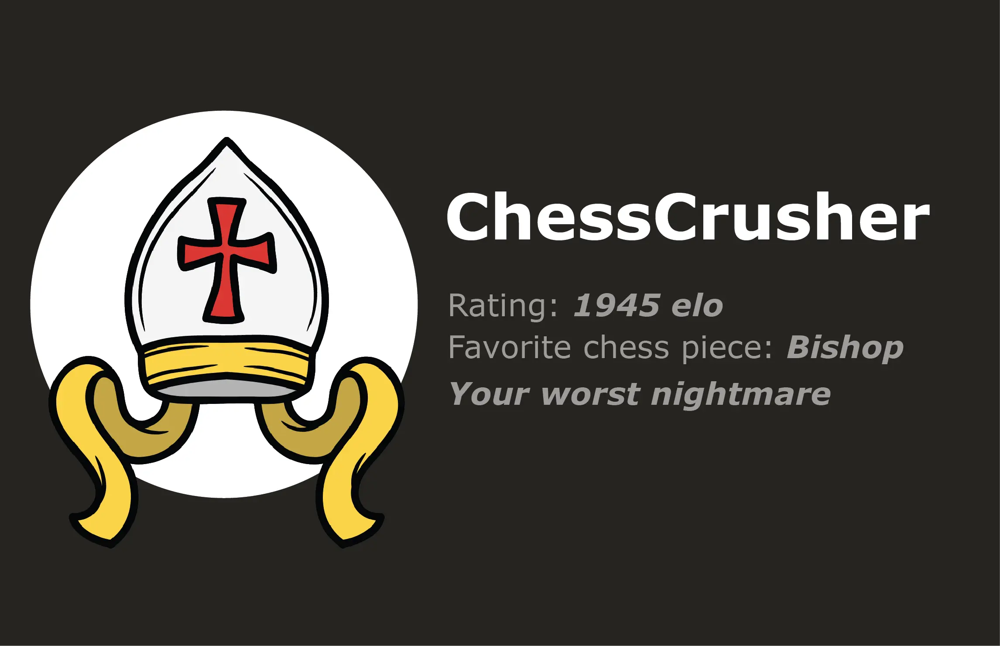
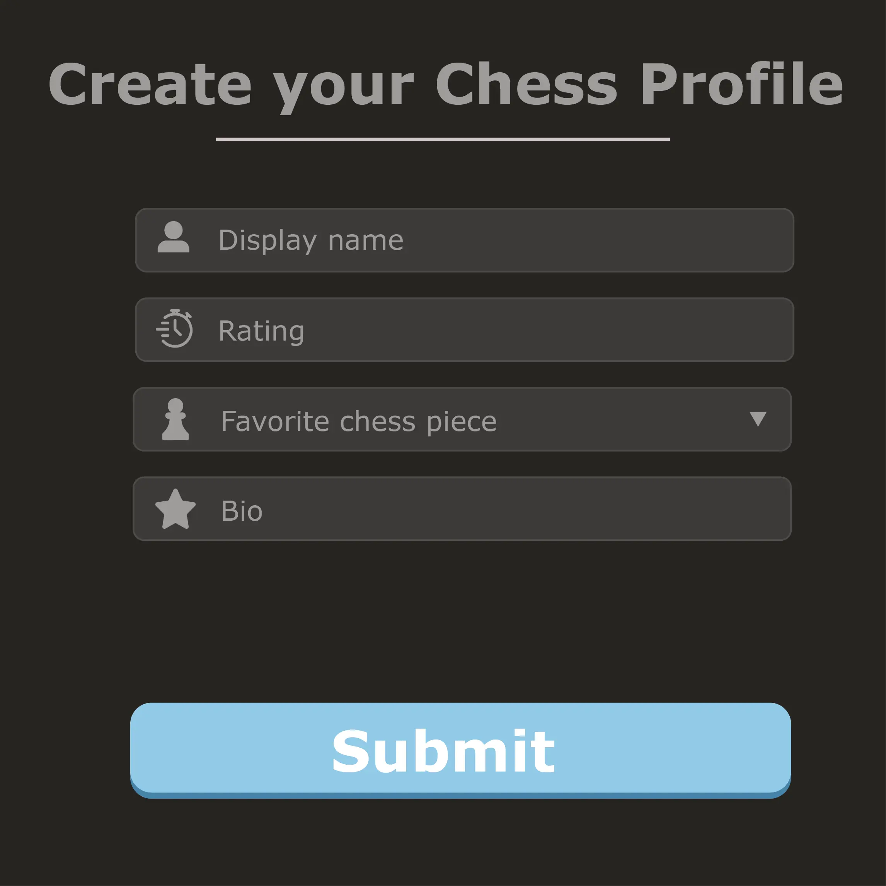
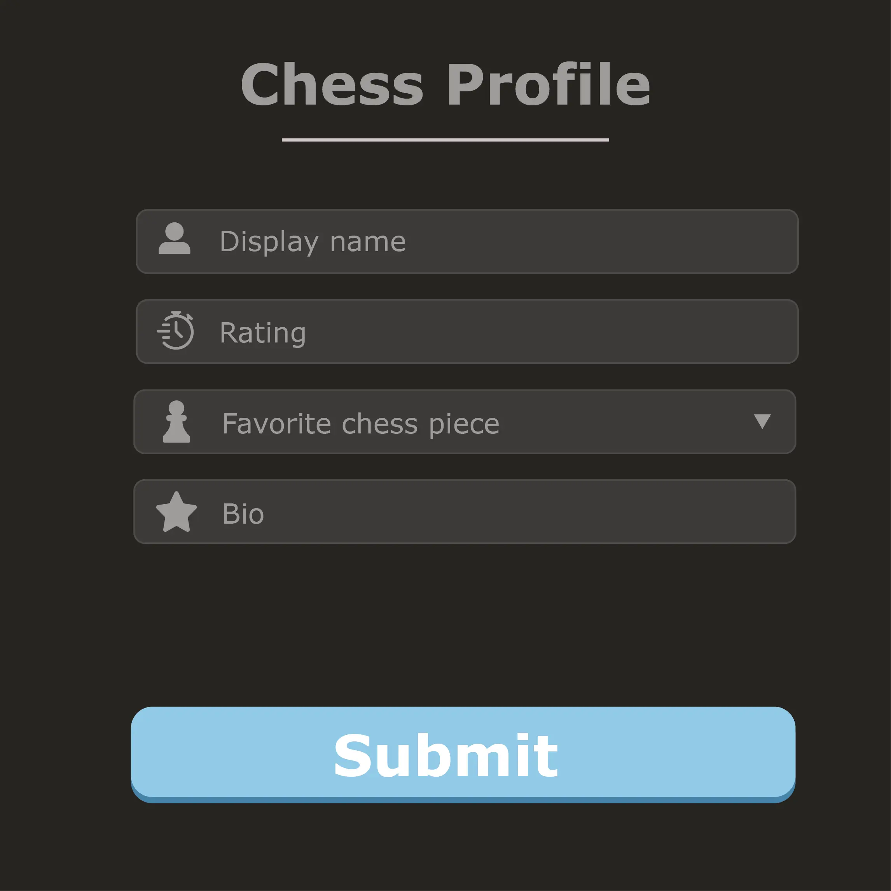
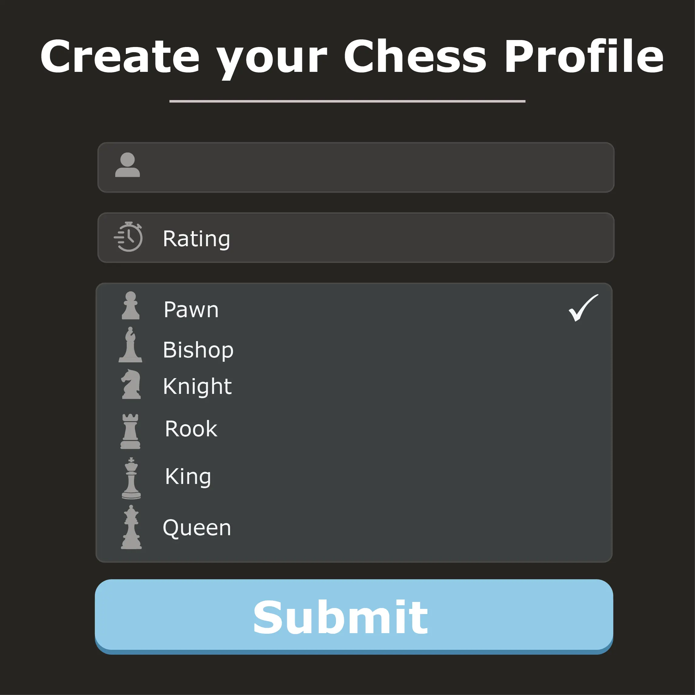
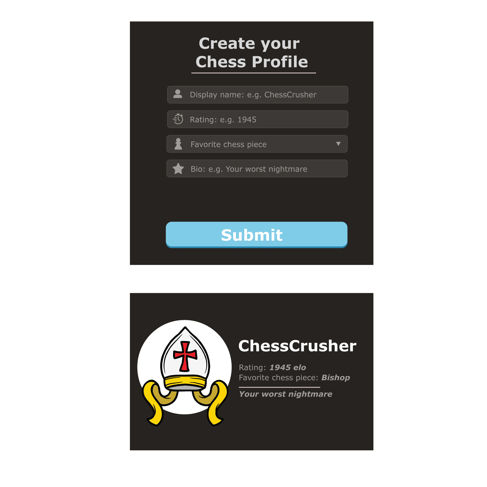
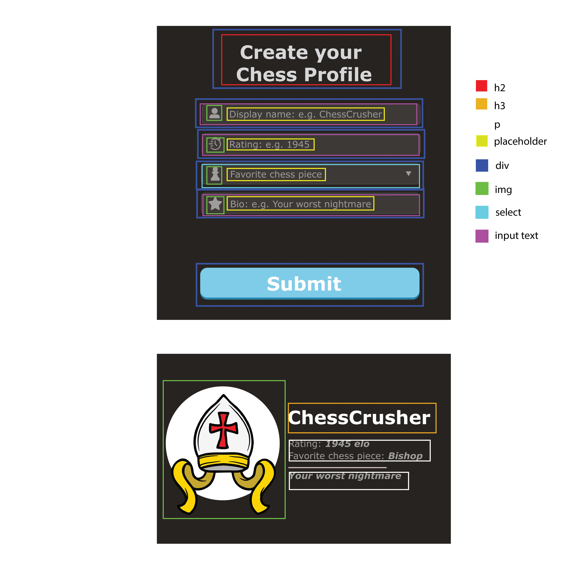
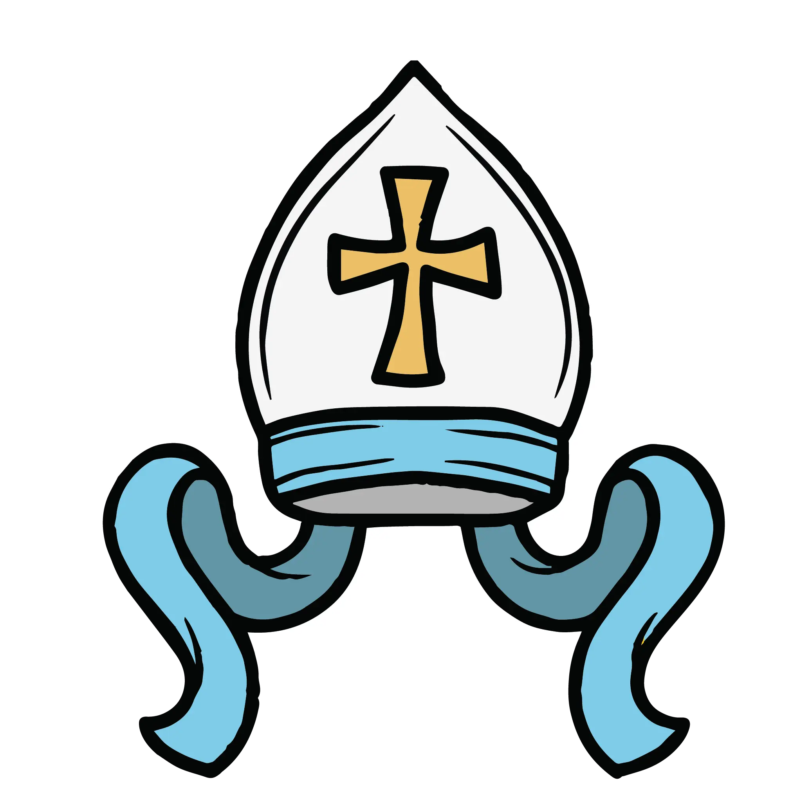
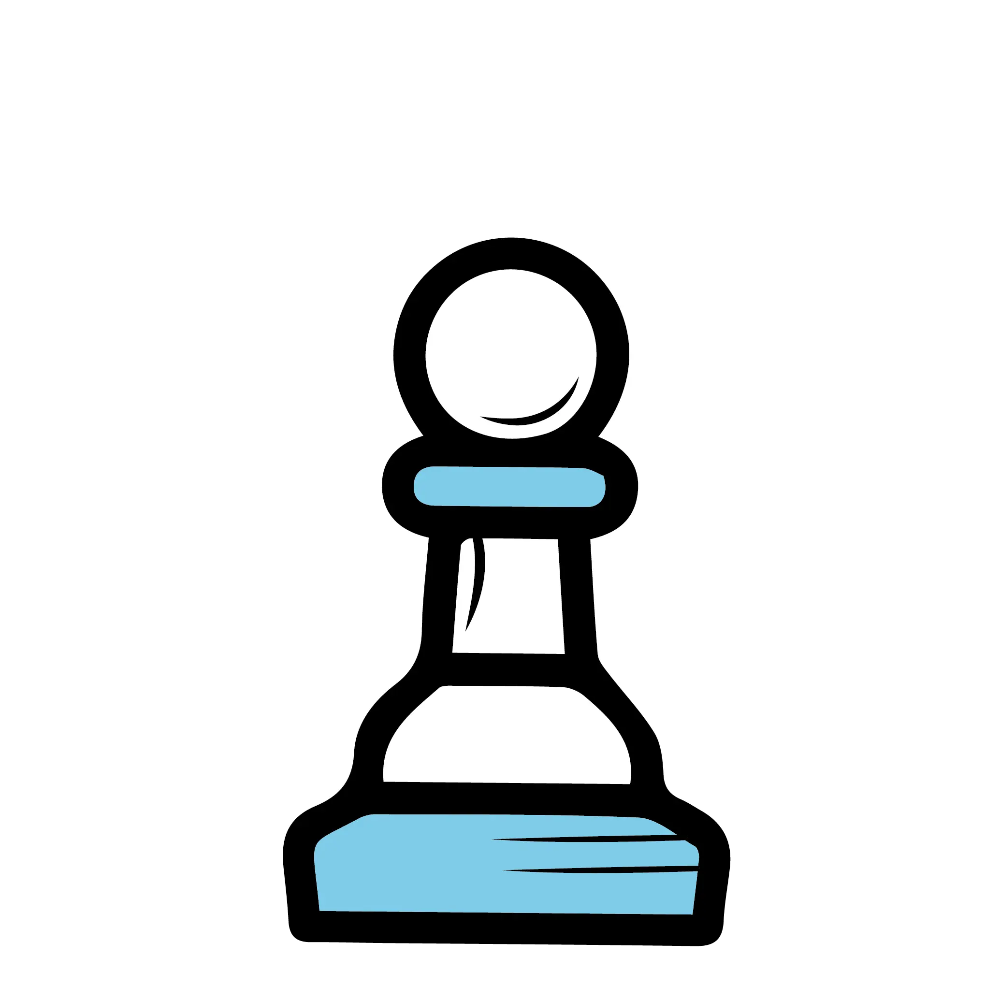
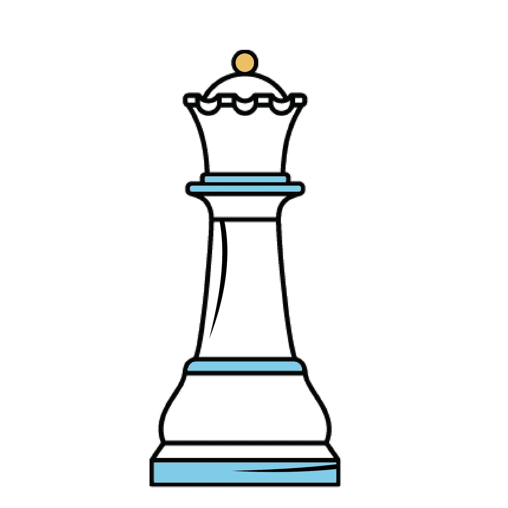
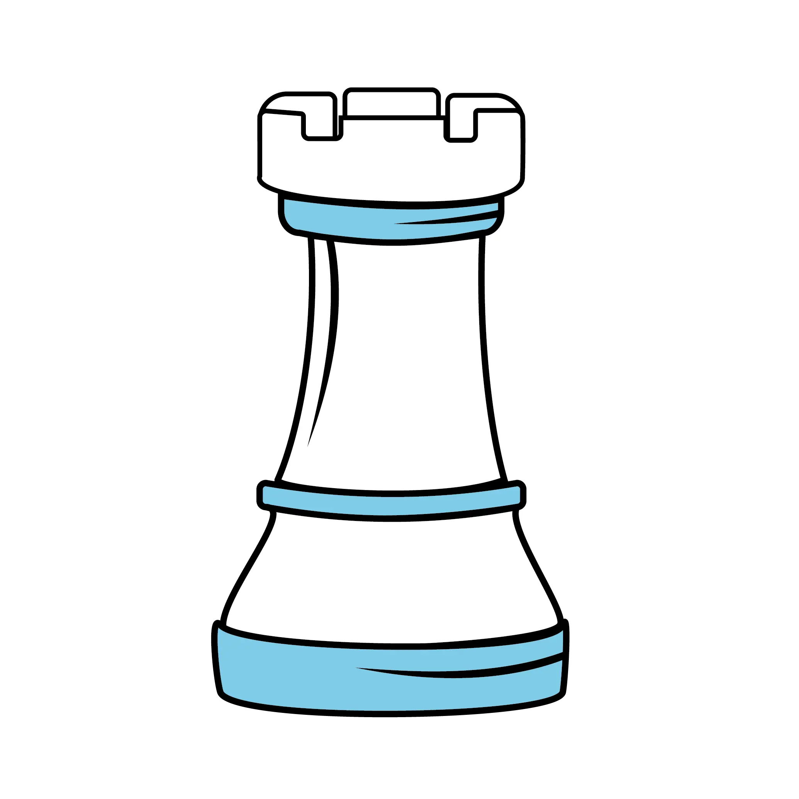

Welcome to ChessEnthust Club!
Where every move counts
Rating:
Favorite chess piece:
Project type:
Profile Creator Website Project.
Project description and Reflection:
This is a Chess Profile creator for passionate chess player. As a chess player, I believe that chess players would enjoy reflecting our strengths through our ratings, our personality through favorite chess piece and bio. For avatar choices, each different chosen "Favorite chess piece" will be an avatar of that chess piece.
------------------
I did not put "favorite opening" as an option because it is actually best kept secret since players would research their opponents and this would make it easier for them. I understand that if this were a project that is going to be published online for chess players to use, they would not actually reveal their "true" favorite opening online.
------------------
Before building the website, I was wondering how to deal with the drop-down being a long list and if it is going to interfere with the interface significantly. It turned out that it does not, which is a relief. After the feedback for the wireframe, I made the title: "Create your Chess Profile" stack up so that they are nicely centered in the middle. I also increase the whiteness to the title so that it does not get mixed up with the ones that need input. In the profile section after closing the modal, I also added a line so that it separates the Rating, Favorite chess piece from the Bio. I am excited to see what I can do in the future.
Date:
April 1 - April 14, 2024
Role:
Web Developer and Web Designer.
Concept Sketch and Wireframe:









